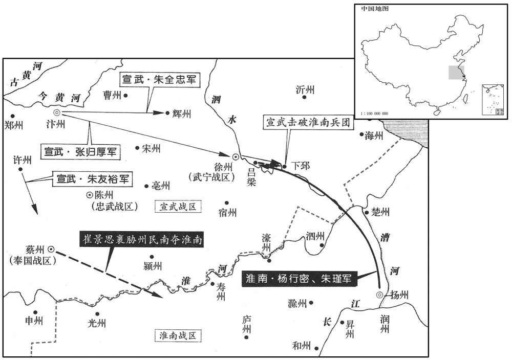
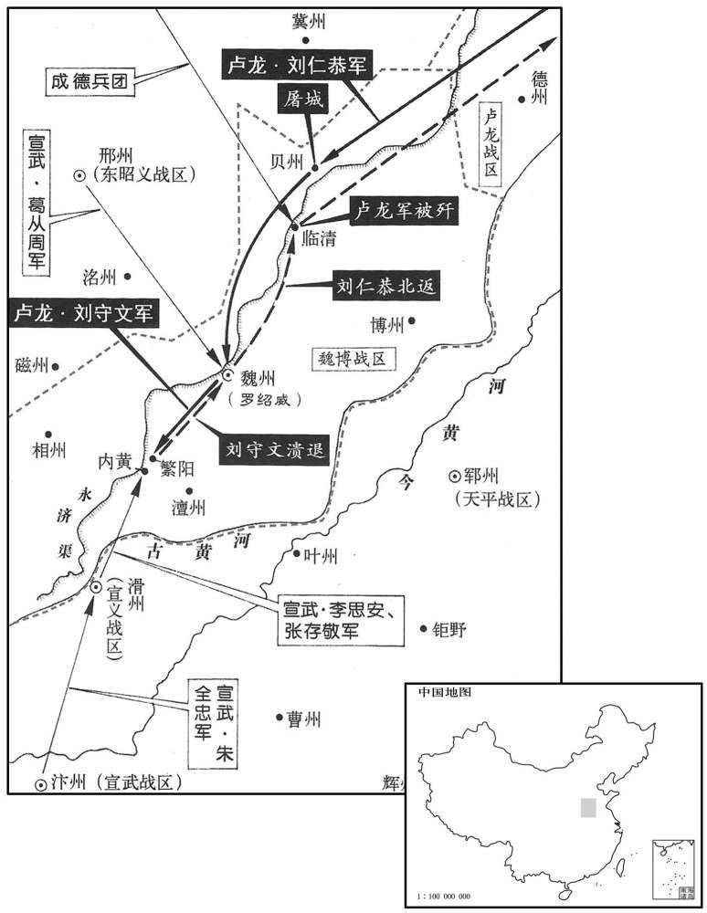
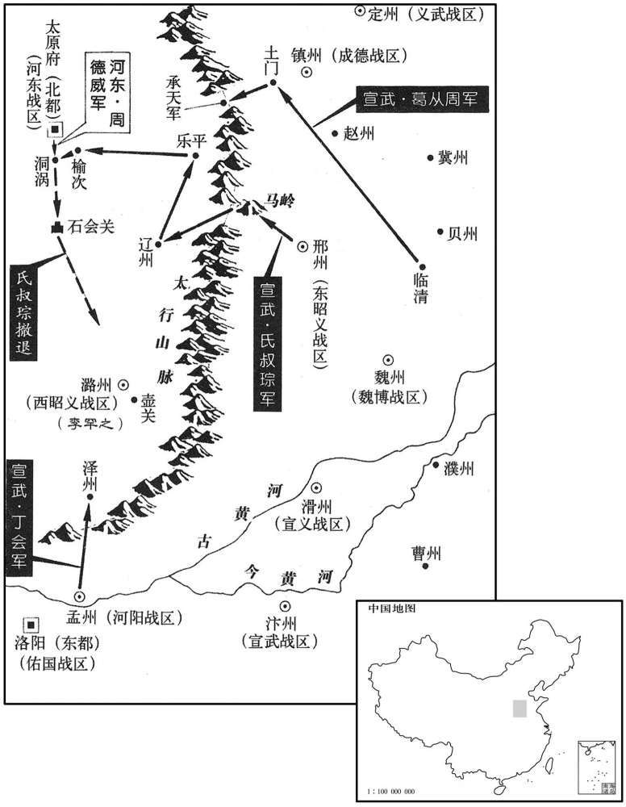

公元899年资治通鉴：本年记事、原文与白话对照
按原书编年位置阅读；追叙和史论不等于本年发生的事件。白话采用所据译本，缺译不以生成译文补齐。
卷261 · 本年记事
公元899年 · 唐昭宗圣穆景文孝皇帝光化二年
二年〔（已未、八九九）〕
本年事件索引（现代整理）
- 朝廷罢免崔胤宰相职务，任陆扆为相
- 朱全忠表请李罕之等人为各镇节度使
- 杨行密、朱瑾率军攻徐州，朱全忠亲自救援
- 刘仁恭率十万军攻陷贝州并围攻魏州
- 朱全忠遣返崔贤，蔡州军民杀贤后归附杨行密
- 朱全忠亲自救援徐州，杨行密撤军
- 李思安设伏击败刘守文，杀单可及并解魏州之围
- 葛从周与魏军击溃刘仁恭，刘仁恭此后势衰
- 罗绍威与李克用修好求援，因刘仁恭已败而援军折返
- 葛从周攻取承天军、辽州乐平，进逼晋阳
- 周德威在洞涡擒获汴将陈章，击退丁会
- 丁会攻下泽州
- 田頵派康儒救援遭钱镠军围困的婺州
- 朝廷在遂州设置武信军
- 李君庆围攻潞州，遭朱全忠援军击败，李克用斩杀李君庆
- 康儒击败两浙军并攻取婺州，擒获王球
- 李罕之病重，朱全忠改任其为河阳节度使
- 朝廷任王宗佶为武信节度使
- 李罕之在怀州去世
- 王珙为部下所杀，李璠被推为保义留后
- 朱全忠戍守海州的陈汉宾归降杨行密，淮南军接管海州
- 朝廷加封成汭为中书令
- 李唐攻取道州，斩杀刺史蔡结并平定湖南诸州
- 朱全忠调葛从周离开潞州，李嗣昭收复潞、泽二州
- 朝廷任李茂贞兼领彰义节度使
- 李克用表请孟迁为昭义留后
- 王师范借助淮南军收复密州并击退沂州援军
- 陕州将领朱简杀李璠，归附朱全忠并改名朱友谦
- 朝廷加封赵匡凝为中书令
- 李琼攻取郴州、连州，马殷平定湖南
- 朝廷加封罗绍威为同平章事

本年形势与背景参考图

本年形势与背景参考图

本年形势与背景参考图
春，正月，丁未，中书侍郎兼吏部尚书〔【章：十二行本「书」下有「同平章事」四字；乙十一行本同；孔本同；张校同。】〕崔胤罢守本官；以兵部尚书陆扆同平章事。〔崔胤、陆扆迭为拜罢。〕
春季，正月，丁未（十三日），朝廷将中书侍郎兼吏部尚书崔胤罢官留职；任命兵部尚书陆为同平章事。
朱全忠表李罕之为昭义节度使，又表权知河阳留后丁会、武宁留后王敬荛、〔荛，如招翻。〕彰义留后张珂并为节度使。〔河阳、武宁皆附属朱全忠，独张珂在泾州，而为之请节钺，亦所以结之。〕
朱全忠向朝廷上表请求任命李罕之为昭义节度使，又表请将暂任河阳留后丁会、武宁留后王敬尧、彰义留后张珂一同任命为节度使。
杨行密与朱瑾将兵数万攻徐州，军于吕梁，朱全忠遣骑将张归厚救之。
杨行密与朱瑾带领军队几万人攻打徐州，在吕梁驻扎，朱全忠派遣骑兵将领张归厚前往救援徐州。
刘仁恭发幽、沧等十二州兵十万，〔十二州：幽、涿、瀛、莫、平、营、蓟、妫、檀、沧、景、德也。幽州巡属更有蔚、新、武三州，刘仁恭留以备河东，不发其兵。〕欲兼河朔；攻贝州，拔之，城中万余户，尽屠之，投尸清水。〔清水，即清河之水。〕由是诸城各坚守不下。仁恭进攻魏州，营于城北；魏博节度使罗绍威求救于朱全忠。
刘仁恭征发幽州、沧州等十二个州的军队十万人，想兼并黄河以北地盘。先去攻打贝州，予以攻克，城内一万余户居民，全都遭受屠杀，尸体被扔弃到清河水中。从此各城都顽强固守不投降。刘仁恭进军攻打魏州，在城北安营扎寨，魏博节度使罗绍威向朱全忠求救。
朱全忠遣崔贤还蔡州，〔崔洪以弟贤为质，见上年。〕发其兵二千诣大梁。二月，蔡将崔景思等杀贤，劫崔洪，悉驱兵民渡淮奔杨行密。兵民稍稍遁归，〔安土重迁，人情之常也。〕至广陵者不满二千人。全忠命许州刺史朱友裕守蔡州。
朱全忠把蔡州剌史崔洪的弟弟遣送回蔡州，征发蔡州军队二千人前赴大梁。二月份，蔡州军队将领崔景思等杀害了崔贤，劫持崔洪，驱赶蔡州的全部军队和百姓渡过淮水投奔杨行密。士兵和百姓渐渐地都逃了回去，到达广陵的人不到二千名。朱全忠命令许州剌史朱友裕兼守蔡州事宜。
朱全忠自将救徐州，杨行密闻之，引兵去；汴人追及之于下邳，〔下邳，古县，唐属徐州。九域志，在徐州东一百八十里。〕杀千余人。全忠行至辉州，〔是年，朱全忠表以宋州之砀山、虞城、单父，曹州之成武，置辉州，即单州之封域也。〕闻淮南兵已退，乃还。
朱全忠亲自率领军队救援徐州，杨行密得知，带领人马离去。朱全忠军队一直追击到下邳县，杀死一千余人。朱全忠赶到辉州时，听说淮南军队已经撤退，于是返回。
三月，朱全忠遣其将李思安、张存敬将兵救魏博，屯于内黄；〔九域志：内黄县在魏州西南二百一十四里。〕癸卯，全忠以中军军于滑州。刘仁恭谓其子守文曰：「汝勇十倍于思安，当先虏鼠辈，后擒绍威耳！」乃遣守文及其妹伲单可及将精兵五万击思安于内黄。丁未，思安使其将袁象先伏兵于清水之右，〔淇水东过内黄，谓之白沟水，亦谓之清河水。〕思安逆战于繁阳，〔繁阳，汉古县，唐并省入内黄。杜佑曰：「汉繁阳县故城在内黄县西北。〕阳不胜而却；守文逐之，及内黄之北，思安勒兵还战，伏兵发，夹击之。幽州兵大败，斩可及，杀获三万人，守文仅以身免。可及，幽州骁将，号「单无敌」，燕军失之丧气。〔李克用轻单可及而有木瓜涧之败，刘仁恭轻李思安而单可及丧元，是以用兵者戒于轻敌。丧，息浪翻。〕思安，陈留人也。
三月，朱全忠派遣属下将领李思安、张存敬带领军队救援魏博节度使罗绍威，在内黄县驻扎，癸卯（初十），朱全忠派中军在滑州安营。刘仁恭对他的儿子刘守文说：“你的勇猛是李思安的十倍，你应当首先俘虏这些无能鼠辈，然后再擒获罗绍威！”刘仁恭于是派遣刘守文和他的妹夫单可及带领精兵五万人在内黄攻打李思安。丁未（十四日），李思安派遣手下将领袁象先在清河水的右侧埋伏下军队，李思安在繁阳迎战刘守文，假装不能取胜而后退；刘守文追击李思安，到内黄县的北部，李思安率领军队回头攻打，埋伏下的军队也发起进攻，两面夹击。结果刘仁恭的幽州军队打了大败仗，单可及被斩杀，三万人被斩杀擒获，刘守文本人仅仅免于一死。单可及是幽州的勇猛将领，号称“单无敌”，刘仁恭的军队失去单可及后大伤元气。李思安是陈留人。
时葛从周自邢州将精骑八百已入魏州。戊申，仁恭攻上水关、馆陶门，〔馆陶门，魏州城北门，由此门出，趣馆陶县，因以为门名。〕从周与宣义牙将贺德伦出战，顾门者曰：「前有大敌，不可返顾。」命阖其扉。〔阖，辖腊翻。扉，门扇也。〕从周等殊死战，仁恭复大败，〔复，扶又翻；下同。〕擒其将薛突厥、王郐郎。〔郐，古外翻。〕明日，汴、魏乘胜合兵击仁恭，破其八寨，仁恭父子烧营而遁。汴、魏之人长驱追之，至临清，拥其众人永济渠，杀溺不可胜纪。〔胜，音升。〕镇人亦出兵邀击于东境，〔镇人，王镕之兵，深、冀，赵之东境。〕自魏至沧五百里间，僵尸相枕。〔僵，居良翻。枕，职任翻。〕仁恭自是不振，而全忠益横矣。〔幽、并之兵势皆挫，故全忠益横。横，户孟翻。〕德伦，河西胡人也。〔薛史：贺德伦，其先河西部落人，父怀庆，隶滑州军，为小校，故德伦少为滑牙将。〕
这时，葛从周从邢州带领精壮骑兵八百人已进入魏州。戊申（十五日），刘仁恭攻打上水关、馆陶门，葛从周与宣义牙将贺德伦出城交战，回头对守护城门的士兵说：“前方有强大的敌人，不能让出战的将士有返回念头。”命令把城门关死。葛从周等率军拼死奋战，刘仁恭的人马又一次大败，他的手下将领薛突厥、王郐郎被擒获。第二天，汴州军队和魏州军队联合起来乘胜追击刘仁恭，攻破八个营寨，刘仁恭、刘守文父子烧毁营帐逃跑。汴州和魏州的军队长驱直追，到达临清，把刘仁恭的人马拥挤逼迫到永济渠里，被斩杀和溺死的数不胜数。镇州的王也派出军队在东边的深州、冀州一带拦击刘仁恭。从魏州到沧州五百里的范围内，僵硬的尸体相互枕籍。刘仁恭从此一蹶不振，而朱全忠更加骄横。贺德伦是河西的胡人。
刘仁恭之攻魏州也，罗绍威遣使修好于河东，〔好，呼到翻。〕且求救。壬午，李克用遣李嗣昭将兵救之。会仁恭已为汴兵所败，〔败，补迈翻。〕绍威复与河东绝，〔自李存信莘县之败，魏与并绝矣，今因求救而通好；并兵未至，而汴人有功，故复与并绝。〕嗣昭引还。
刘仁恭攻打魏州时，魏博节度使罗绍威派遣使者向河东的李克用谋求和好，并且请求李克用救援。壬午（疑误），李克用派遣李嗣昭带领军队救援刘仁恭。恰逢刘仁恭已经被汴州军队打败，罗绍威于是又与河东李克用绝交，李嗣昭带领军队返回。
葛从周乘破幽州之势，自土门攻河东，拔承天军；别将氏叔琮自马岭入，〔马岭，在太原府太谷县东南八十里。〕拔辽州乐平，〔晋分汉沾县置乐平县，唐属辽州。〕进军榆次；〔榆次，古县，唐属太原府。〕李克用遣内牙军副周德威击之。
葛从周乘着打败幽州刘仁恭的威势，从土门攻打河东军队，攻克承天军。汴州军队的另一将领氏叔琮从马岭攻入，攻克辽州乐平县，进军榆次县驻扎。李克用派遣内牙军副周德威予以抗击。
叔琮有骁将陈章，号「陈夜叉」，为前锋，〔俗言阴府有鬼使曰夜叉；时人以陈章鸷悍可畏如夜叉然，因称之。〕请于叔琮曰：「河东所恃者周杨五，〔周德威小字杨五。〕请擒之，求一州为赏。」克用闻之，以戒德威，德威曰：「彼大言耳。」战于洞涡，〔洞涡水出沾县北北山，东流南屈，过受阳县故城东，西过榆次县南。此据水经注也。魏收地形志：洞涡水一出木瓜岭，一出沾岭，一出大廉山，一出原过祠下，五水合流，故曰同过，后语转为洞涡。按高欢建大亟相府于晋阳，魏收已策名霸府。齐受魏禅，以晋阳为别都。魏收多从其主往来晋阳宫，宜知地名之的。〕德威微服往挑战，〔挑，徒了翻。〕谓其属曰：「汝见陈夜叉即走。」章果逐之，德威奋铁檛击之坠马，〔檛，侧瓜翻。〕生擒以献。因击叔琮，大破之，斩首三千级。叔琮弃营走，德威追之，出石会关，又斩千余级。从周亦引还。
氏叔琮手下有一员猛将陈章，绰号“陈夜叉”，是军中前锋，他向氏叔琮请求说：“河东李克用所依赖的人是周德威，请让我去擒获他，给我一个州作为奖赏。”李克用得知这一消息，告诉周德威让他有所戒备，周德威说：“陈章不过是说大话罢了。”双方在洞涡展开激战，周德威身穿便服前往挑战，并对属下将领说：“你看见陈夜叉就走开。”陈章果然追逐周德威，周德威奋力挥舞铁将陈章打下马，活捉他献给李克用。又趁势攻打氏叔琮，将氏叔琮打得大败，斩杀三千人。氏叔琮放弃营寨逃跑，周德威紧追不舍，出了石会关，又斩杀一千余人。葛从周也带领军队撤回。
丁巳，朱全忠遣河阳节度使丁会攻泽州，下之。〔去年十二月，河东兵取泽州。考异曰：实录：「丁巳，葛从周复取泽州。」按编遗录：「丁巳，河阳丁会收复泽州。」实录云从周，误也。唐太祖纪年录：「三月，周德威败氏叔琮于洞涡驿。先是逆温令丁会将兵助李罕之，戍潞州。至是，葛从周复入潞州以代丁会，贼复陷我泽州。」梁实录、薛史梁纪皆云六月方遣从周入潞州，纪年录于此连言后事耳。〕
丁巳（二十四日），朱全忠派遣河阳节度使丁会攻打泽州，予以攻克。
婺州刺史王坛为两浙所围，〔去年闰月，两浙兵攻婺州。〕求救于宣歙观察使田頵，〔按宣歙观察，先是已升宁国军，以田頵为节度使。歙，书涉翻。〕夏，四月，頵遣行营都指挥使康儒等救之。
婺州剌史王坛被两浙钱的军队围困，向宣歙观察使田求救，夏季，四月，田派遣行营都指挥使康儒等救援王坛。
五月，甲午，置武信军于遂州，以遂、合等五州隶之。〔王建之志也。〕
五月，甲午（初二），朝廷在遂州设置武信节度使司，划出遂州、合州等五个州隶属其下。
李克用遣蕃、汉马步都指挥使李君庆将兵攻李罕之，己亥，围潞州。朱全忠出屯河阳，辛丑，遣其将张存敬救之，壬寅，又遣丁会将兵继之；大破河东兵，君庆解围去。克用诛君庆及其裨将伊审、李弘袭；以李嗣昭为蕃、汉马步都指挥使，代之攻潞州。
罕之，己亥（初七），李君庆围攻潞州。朱全忠派出军队驻扎河阳，辛丑（初九），朱全忠派遣属下将领张存敬救援潞州的李罕之，壬寅（初十），朱全忠又派丁会带领军队相继增援，把河东军队打得大败，李君庆被迫解除潞州之围退去。李克用把败将李君庆及其副将伊审、李弘袭斩杀；任命李嗣昭为蕃、汉马步都指挥使、代替李君庆继续攻打潞州。
庚戌，康儒等败两浙兵于龙兵，〔龙丘，本汉太末县，贞观八年更名龙丘，即今龙游县。九域志：属衢州，在州东七十五里。败，补迈翻。〕擒其将王球，〔王球为主将，以攻婺州而见擒于龙丘，盖以浙兵逆与宣兵战也。〕遂取婺州。〔景福元年，王坛得婺州，至是失之。〕
庚戌（十八日），田派遣的行营都指挥使康儒等在龙丘县打败两浙钱的军队，擒获两浙军队将领王球，于是占据婺州。
六月，乙丑，李罕之疾亟。〔亟，纪力翻。〕丁卯，全忠表罕之为河阳节度使，以丁会为昭义节度使；未几，〔几，居岂翻。〕又以其将张归霸守邢州，遣葛从周代会守潞州。〔考异曰：编遗录：「六月，乙丑，李罕之疾甚，请归河阳。丁卯，上令抽大军回，以丁会权制置，绥怀、上党，上乃东归。」不言遣从周入潞。薛居正五代史梁纪：「六月，帝表丁会为潞州节度使，以李罕之疾亟故也。又遣葛从周由固镇路入于潞州，以援丁会。」梁实录、后唐纪皆云代会。自此至潞州破，贺德伦走，不复见会名。或者李罕之既卒，复召会守河阳，以从周代之，不可知也。今因会镇潞，终言之。〕
六月，乙丑（初三），李罕之病重。丁卯（初五），朱全忠向朝廷上呈表章请求任命李罕之为河阳节度使，任命丁会为昭义节度使。不久，朱全忠又委派属下将领张归霸据守邢州，派遣葛从周代替丁会据守潞州。
以西川大将王宗佶为武信节度使。〔王建之请也。〕宗佶，本姓甘，洪州人也。
朝廷任命西川大将王宗佶为武信节度使。王宗佶本姓甘，是洪州人。
丁丑，李罕之薨于怀州。〔李罕之自潞州赴河阳，至怀州而卒。〕
丁丑（十五日），李罕之在怀州死去。
保义节度使王珙，生猜忍，虽妻子亲近，常不自保；至是乱，为麾下所杀，〔僖宗中和初，王重盈镇陕，传子珙，至是而亡。〕推都将李璠为留后。〔璠，音烦。〕
保义节度使王珙，性情猜忌残忍，即使是妻子儿子这样的骨肉亲人，也常常为自己的安危担忧。这时军中发生变乱，王珙被手下人马斩杀，大家推举都将李为保义留后。
秋，七月，朱全忠海州戍将陈汉宾请降于杨行密。淮海游弈使张训以汉宾心未可知，与涟水防遏使庐江王绾将兵二千直趣海州，遂据其城。〔杨行密自此遂有海州。趣，七喻翻。〕
秋季，七月，朱全忠属下海州守将陈汉宾向杨行密请求投降。杨行密属将淮海游弈使张训认为陈汉宾居心难测，便与涟水防遏使、庐江人王绾带领军队二千直接奔赴海州，于是占据海州城。
加荆南节度使成汭兼中书令。
朝廷加封荆南节度使成兼任中书令。
马殷遣其将李唐攻道州，蔡结聚群蛮，伏兵于隘以击之，大破唐兵。唐曰：「蛮所恃者山林耳，若战平地，安能败我！」〔败，补迈翻。〕乃命因风燔林，火烛天地，群蛮惊遁，遂拔道州，擒结，斩之。
长沙的武安节度使马殷派遣属下将领李唐攻打道州，道州剌史蔡结聚集众多蛮人，在险要地段埋伏下军队予以抗击，把李唐的人马打得大败。李唐说：“蛮人所依仗的不过是山林罢了，如果在平地交战，他们怎么会打败我！”便下令借助风势放火焚烧山林，顿时天是间一片火海，蛮人惊惶逃跑，李唐于是攻克道州，擒获蔡结，将他斩杀。
朱全忠召葛从周于潞州，使贺德伦守之。八月，丙寅，李嗣昭引兵至潞州城下，分兵攻泽州。己巳，汴将刘閗弃泽州走，河东兵进拔天井关，以李孝璋为泽州刺史。〔「李孝璋」，当作「李存璋」。〕贺德伦闭城不出，李嗣昭日以铁骑环其城，捕刍牧者，〔环，音宦。〕附城三十里禾黍皆刈之。乙酉，德伦等弃城宵遁，趣壶关，〔贺德伦之兵既不得出城刍牧，城外禾忝又空，粮援俱绝，宜其遁也。九域志：壶关县在潞州东二十五里。趣，七喻翻。〕河东将李存审〔李存审，即符存审。〕伏兵邀击之，杀获甚众。葛从周以援兵至，闻德伦等已败，乃还。
朱全忠召回在潞州的葛从周，委令贺德伦前去据守。八月，丙寅（初五），李嗣昭带领军队到达潞州城下，分兵攻打泽州。己巳（初八），汴州军队将领刘放弃泽州城逃跑，河东军队开进攻克天井关，李克用委任李孝璋为泽州剌史。潞州的贺德伦关闭城门拒不出战，李嗣昭每天派出骑兵环绕潞州城巡游，捕捉打草放牧的人，把靠近潞州城三十里方圆的田禾稻谷都割光。乙酉（二十四月），贺德伦等放弃潞州城，乘夜逃跑，奔赴壶关县，河东军队将领李存审埋伏下士兵拦截攻打，斩杀擒获相当多。葛从周带领救援人马赶到，听说贺德伦等已经失败，于是率众返回。
九月，癸卯，以凤翔节度使李茂贞为凤翔、彰义节度使。〔是年，春正月，朱全忠表张珂为彰义节度使。张氏镇泾州，凡三帅矣，今命李茂贞兼领之。〕
九月，癸卯（十二日），朝廷任命凤翔节度使李茂贞为凤翔、彰义节度使。
李克用表汾州刺史孟迁为昭义留后。〔为孟迁以潞州叛李克用张本。〕
李克用向朝廷进呈表章，请求任命汾州剌史孟迁为昭义留后。
淄青节度使王师范以沂、密内叛，〔当是时，朱全忠尽有河南一道之地，王师范亦附属焉。若沂、密内叛，将安归邪﹖又不乞师于全忠而乞师于杨行密，此事当考。〕乞师于杨行密。冬，十月，行密遣海州刺史台蒙、副使王绾将兵助之，拔密州，归于师范；将攻沂州，先使觇之，〔觇，丑廉翻。〕曰：「城中皆偃旗息鼓。」绾曰：「此必有备，而救兵近，不可击也。」诸将曰：「密已下矣，沂何能为！」绾不能止，乃伏兵林中以待之。诸将攻沂州不克，救兵至，引退；〔此救兵果谁兵欤﹖〕州兵乘之，绾发伏击败之。〔败，补迈翻。〕
淄青节度使王师范因为沂州、密州发生内部叛乱，向杨行密请求派军队救援。冬季，十月，杨行密派遣海州剌史台、副使王绾带领军队求助王师范，攻占密州城，归还王师范；接着要攻打沂州，先派人前去侦察，回来的人说：“城内偃旗息鼓，毫无动静。”王绾说：“沂州城内一定有所准备，而救援的军队又很近，因此不能前去攻打。”各位将领却说：“密州都已攻下了，沂州还能怎么样！”王绾不能阻止属下将领，便在树林中埋伏下军队，以待战事发展。各位将领攻打沂州未能攻克，沂州的援兵又赶到了，便率兵后退。沂州城内的军队乘机追击，王绾发动埋伏军队将沂州人马打败。
十一月，陜州都将朱简杀李璠，自称留后，附朱全忠，仍请更名友谦，预于子侄。〔朱全忠又兼有陕、虢。更，工衡翻。〕
十一月，陕州都将朱简杀死李，自称留后，归附朱全忠，请求更改名字为朱友谦，加入到朱全忠的子侄辈中。
加忠义节度使赵匡凝兼中书令。
朝廷加封忠义节度使赵匡凝兼任中书令。
马殷遣其将李琼攻郴州，执陈彦谦，斩之；进攻连州，鲁景仁自杀，湖南皆平。〔马殷始尽有湖南之地。〕
马殷派遣属下将领李琼攻打郴州，抓获陈彦谦，将他斩杀；又进军攻打连州，鲁景仁自杀身亡，湖南各州全部平定。
十二月，加魏博节度使罗绍威同平章事。
十二月，朝廷加封魏博节度使罗绍威为同平章事。